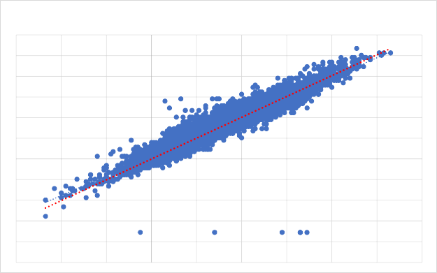
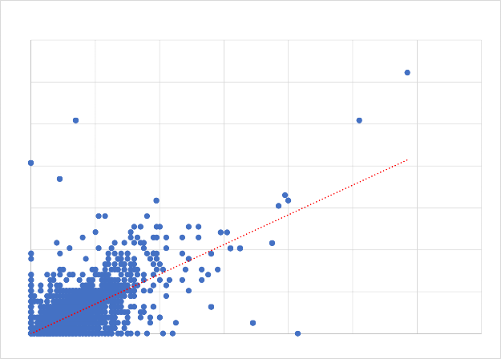
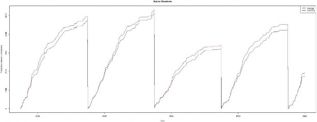
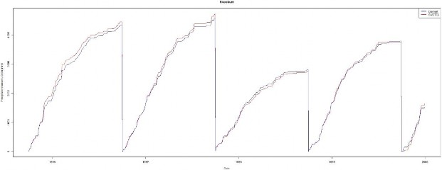
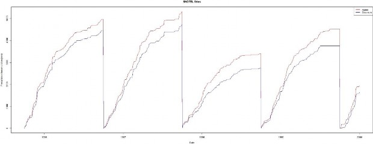
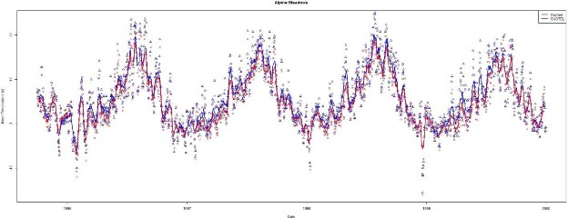
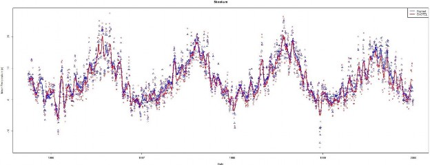
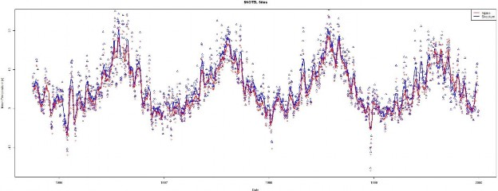

+
D.7b | Statistical Climate Addendum: Development of Statistical Models Based on Monthly PRISM / Daymet Data
Overview (Tutorial D.7b - Addendum to Spatial Climate Statistics)
VELMA requires daily temperature and precipitation climate data to accurately simulate hydrologic processes in watersheds, such as runoff and soil moisture dynamics. Therefore, the accuracy of hydrologic predictions will largely depend upon the proximity of climate a station(s) to the simulated watershed or portions therein. Especially for large watersheds having steep climatic gradients - mountains and coastal areas, for example - climate data need to be at relatively fine spatial resolution (e.g., 1 km2) to accurately capture snow dynamics, runoff and other processes.
This document describes methods for dealing with sparse climate station data. New methods are introduced for improving the estimation of statistical parameters for the VELMA Spatial Weather Model previously described in Appendix 5 of McKane et al. (2014). These new methods include generating daily pseudo weather station driver data for areas of interest that lack ground-based weather stations.
Reference:
McKane, R.; Brookes, A.; Djang, K.; Stieglitz, M.; Abdelnour, A.; Pan, F.; Halama, J.; Pettus, P.; Phillips, D. (2014) Velma User Manual and Technical Documentation, 2nd ed.; U.S. Environmental Protection Agency Office of Research and Development National Health and Environmental Effects Research Laboratory: Corvallis, OR.
Procedure 1 - Generate statistical parameters
Following the Spatial Weather Model methodology, correlation coefficients were generated from 800m resolution PRISM 30-year monthly temperature and precipitation normals for 1981- 2010 (PRISM, 2013). Correlation models were build based on a single independent variable, elevation. Gridded PRISM data were downscaled to match the 30m digital elevation modeled data. Relational models were then generated for each 30 year normal month cell to its corresponding elevation cell of the AOI. Monthly models were developed for both mean air temperature and precipitation, for each AOI. Revised intercept and slope values were used to complete both the "Air Temperature Coefficients File" and the "Precipitation Coefficients File", which are needed for the VELMA Spatial Weather Configuration. Unfitted parameters such as heat index and flow accumulation were set to zero, since they were unmodeled. The results are summarized in Table 1 and Table 2. All regression equations were created using R statistics package (Appendix 1).
Table 1. Mashel River Basin, WA
| Parameter | Intercept | Slope | R^2 |
|---|---|---|---|
| X01_ppt | 131.1239 | 0.165175 | 0.626577 |
| X02_ppt | 86.67763 | 0.086708 | 0.61712 |
| X03_ppt | 115.3467 | 0.08018 | 0.531575 |
| X04_ppt | 87.67271 | 0.069019 | 0.714808 |
| X05_ppt | 64.68459 | 0.077026 | 0.848851 |
| X06_ppt | 42.64319 | 0.077571 | 0.881703 |
| X07_ppt | 17.00757 | 0.036384 | 0.874514 |
| X08_ppt | 25.5493 | 0.017223 | 0.763215 |
| X09_ppt | 33.77266 | 0.050396 | 0.850796 |
| X11_ppt | 151.339 | 0.157905 | 0.62436 |
| X12_ppt | 128.1081 | 0.110864 | 0.534228 |
| X01_mt | 5.306282 | -0.00422 | 0.87001 |
| X02_mt | 5.815265 | -0.00429 | 0.889654 |
| X03_mt | 7.904366 | -0.0051 | 0.919949 |
| X04_mt | 10.30037 | -0.00507 | 0.9252 |
| X05_mt | 13.6444 | -0.00504 | 0.924011 |
| X06_mt | 16.35791 | -0.00495 | 0.925487 |
| X07_mt | 18.90406 | -0.004 | 0.907101 |
| X08_mt | 19.22824 | -0.00397 | 0.893755 |
| X09_mt | 16.23177 | -0.00365 | 0.870096 |
| X10_mt | 11.42558 | -0.00365 | 0.872491 |
| X11_mt | 7.16671 | -0.00427 | 0.88421 |
| X12_mt | 4.495029 | -0.00412 | 0.866289 |
| Parameter | Intercept | Slope | R^2 |
| X01_ppt | 156.8465 | 0.340983 | 0.873725 |
| X02_ppt | 104.9198 | 0.209417 | 0.867981 |
| X03_ppt | 118.9242 | 0.241798 | 0.878695 |
| X04_ppt | 101.0095 | 0.174351 | 0.876515 |
| X05_ppt | 91.96905 | 0.123868 | 0.854035 |
| X06_ppt | 70.32923 | 0.10755 | 0.854376 |
| X07_ppt | 32.10464 | 0.059888 | 0.86893 |
| X08_ppt | 28.56578 | 0.062882 | 0.872201 |
| X09_ppt | 59.68145 | 0.114886 | 0.865976 |
| X10_ppt | 115.1068 | 0.198013 | 0.87521 |
| X11_ppt | 194.4334 | 0.356659 | 0.874651 |
| X12_ppt | 152.0708 | 0.273897 | 0.868276 |
| X01_mt | 4.973876 | -0.00426 | 0.889799 |
| X02_mt | 5.770962 | -0.00439 | 0.900742 |
| X03_mt | 7.638908 | -0.00501 | 0.918905 |
| X04_mt | 9.851594 | -0.00459 | 0.907267 |
| X05_mt | 13.03208 | -0.00482 | 0.921168 |
| X06_mt | 15.6836 | -0.00476 | 0.920645 |
| X07_mt | 18.31654 | -0.00379 | 0.912681 |
| X08_mt | 18.68841 | -0.00389 | 0.916803 |
| X09_mt | 15.68156 | -0.00357 | 0.896509 |
| X10_mt | 11.23656 | -0.00382 | 0.911043 |
| X11_mt | 6.95446 | -0.00444 | 0.89201 |
| X12_mt | 4.201191 | -0.00419 | 0.884903 |
Procedure 2 - Daily weather drivers
Pseudo weather stations were created to solve the problem of when there is no ground observational climate data within AOI. These data are also need to properly parametrize the regression driver data of the VELMA spatial weather model. Daily Gridded Weather Data (Daymet) is a national climate data set that was developed in part from NASA funding, for the years of 1980 - 2014, and is widely used in the scientific community (Thorton et al., 2014). It models daily air temperature and precipitation at a higher 1 km x 1 km spatial resolution, compared to the 4 km x 4 km spatial resolution climate data that is publicly available from the PRISM group (PRISM, 2013).
Pseudo weather stations were created by choosing a semi homogenous elevation area within the AOI that was overlaid by one 1 km Daymet cell. Using the latitude and longitude of the cell, daily precipitation and air temperature data was downloaded for the temporal period of interest. This daily Daymet modeled data was then used as an observed "weather station" within the AOI. This cell location would be used as the "Prime Cell" by its center DEM cell x- and-y coordinates as part of the Spatial Weather Model's parameterization.
As an example, the Mowich SNOTEL weather station that is several KM north and east of the Mashel river basin in Washington was used to explore the effectiveness of this process. 1998 - 2014 SNOTEL from this station along with Daymet modeled climate for these days was plotted to explore fit ground observations vs modeled climate. Results are summarized in Figure 1 and Figure 2.
Figure 17 Daymet modeled air temperature vs overserved Mowich, WA SNOTEL data.
Figure 18. Daymet modeled precipitation vs overserved Mowich, WA SNOTEL data.
Addendum - Procedure 2 - Daily weather drivers
Pseudo station Daymet climate data for water years 1995 and 1999 were compared to two observed SNOTEL climate sites in the Tolt river basin, Alpine Meadows and Skookum. Daily observations of precipitation (mm / day) were accumulated over the water year starting at October 1st and plotted out against Daymet model data at Longitude and Latitudes 1km cells at the location each SNOTEL site. 10 day moving average lines were added to daily comparisons of mean air temperature observations and Daymet models temperatures at those locations.
The same mean daily average temperature and precipitation comparison were made between the two SNOTEL sites.
Figure 19 Accumulated precipitation, Daymet vs Alpine Meadows SNOTEL.
Figure 20 Accumulated precipitation, Daymet vs Skookum SNOTEL.
Figure 21 Accumulated precipitation, Alpine Meadows vs Skookum SNOTEL
Figure 22 Daily air temperature, Daymet vs Alpine Meadows
Figure 23 Daily air temperature, Daymet vs Skookum
Figure 24 Daily air temperature, Skookum vs Alpine Meadows SNOTEL
References
Thornton, P.E., M.M. Thornton, B.W. Mayer, N. Wilhelmi, Y. Wei, R. Devarakonda, and R.B. Cook. 2014. Daymet: Daily Surface Weather Data on a 1-km Grid for North America, Version 2. Data set. Available on-line [https://daac.ornl.gov] from Oak Ridge National Laboratory Distributed Active Archive Center, Oak Ridge, Tennessee, USA.
Appendix
# Regression model between the weather variables (temperature and precipitation) and the # physiographic variables
climate<-read.csv("D:/Temp/Tolt/ToltClimate.csv",header=TRUE) climVar<-names(climate)
# Retrieve the site names
for (i in climVar) { print(i)
}
ln<-length(names(climate))
# Simple plotting of each site, temp vs date
# Modify output/create output directory for plots m <- list()
for (i in 1:ln) {
fit <- lm(climate[,i] ~ climate[,25])
fit <- lm(X01_ppt~ele, data = climate) fitAtt<-summary(fit) models$climVar[i]<-fitAtt
directory="D:/Temp/Tolt/"
r2<- = round(fitAtt$adj.r.squared)
outname<-paste(directory,climVar[i],".jpg",sep="")
jpeg(filename=outname,width=675,height=675,quality=100) #newdata<-subset(wqdata, Site==i)
ylabel <- paste(climVar[i]," (mm)", sep="")
plot(climate[,i] ~ climate[,25],ylab=ylabel,xlab="Elevation (m)") abline(coef(fit)[1:2],col="red")
## rounded coefficients for better output cf <- round(coef(fit), 3)
## sign check to avoid having plus followed by minus for negative coefficients eq <- paste0(climVar[i], " = ", cf[1],
ifelse(sign(cf[2])==1, " + ", " - "), abs(cf[2]), " ele R^2: ", round(r2,3) mtext(eq, 3, line=1)
dev.off()
}
# SNOTEL_Daymet_Climate_Comparison.r # Author: Paul Pettus
# Purpose:
# Compare Daymet modeled and SNOTEL ground station # observations of precipitation and mean air temperature #
################################################################ # Plots 1995 1999
# Skookum
inFile<-"E:/SNOTEL/NRCS_Daymet_Daily_Skookum_Alpine_1995_1999.csv"
dfdmNRCS = read.csv(inFile,header=TRUE,sep=",")
dfdmNRCS$Date <- as.Date(dfdmNRCS$Date, format="%m/%d/%Y")
jpegFile<-"E:/SNOTEL/Plots/SNOTEL_Skookum_Daymet_Daily_TAVG_1995_1999.jpg"
jpeg(filename=jpegFile,width=2000,height=800,quality=100) yLab <- "Mean Temperature (c)"
xLab <- "Date" mainTitle <- "Skookum"
plot(dfdmNRCS$Date,dfdmNRCS$TAVG_c_Skook_SN,type="p",col="red",pch=1,xlab=xLab, ylab=yLab,main=mainTitle) points(dfdmNRCS$Date,dfdmNRCS$TAVG_c_Skook_DM,type="p",col="blue",pch=2)
f21 <- rep(1/11,11)
y_sym2 <- filter(dfdmNRCS$TAVG_c_Skook_DM, f21, sides=2) lines(dfdmNRCS$Date, y_sym2, col="blue",lwd=2)
y_sym <- filter(dfdmNRCS$TAVG_c_Skook_SN, f21, sides=2) lines(dfdmNRCS$Date, y_sym, col="red",lwd=2)
legend('topright', legend=c("Daymet","SNOTEL"), lwd=c(2.5,2.5), col=c("blue","red")) dev.off()
jpegFile <- "E:/SNOTEL/Plots/SNOTEL_Daymet_Skookum_PPT_Accumulation_1995_1999.jpg" jpeg(filename=jpegFile,width=2000,height=800,quality=100)
yLab <- "Precipitaion Accumulation (mm)" xLab <- "Date"
mainTitle <- "Skookum"
plot(dfdmNRCS$Date,dfdmNRCS$acc_PPT_mm_Skook_SN,type="l",col="red",pch=1, xlab=xLab, ylab=yLab,main=mainTitle) lines(dfdmNRCS$Date,dfdmNRCS$acc_PPT_mm_Skook_DM,type="l",col="blue",pch=2)
legend('topright', legend=c("Daymet","SNOTEL"), lwd=c(2.5,2.5), col=c("blue","red")) dev.off()
# Alpine Meadows
jpegFile<-"E:/SNOTEL/Plots/SNOTEL_Alpine_Daymet_Daily_TAVG_1995_1999.jpg" jpeg(filename=jpegFile,width=2000,height=800,quality=100)
yLab <- "Mean Temperature (c)" xLab <- "Date"
mainTitle <- "Alpine Meadows"
plot(dfdmNRCS$Date,dfdmNRCS$TAVG_c_Alp_SN,type="p",col="red",pch=1,xlab=xLab, ylab=yLab,main=mainTitle) points(dfdmNRCS$Date,dfdmNRCS$TAVG_c_Alp_DM,type="p",col="blue",pch=2)
f21 <- rep(1/11,11)
y_sym2 <- filter(dfdmNRCS$TAVG_c_Alp_DM, f21, sides=2) lines(dfdmNRCS$Date, y_sym2, col="blue",lwd=2)
y_sym <- filter(dfdmNRCS$TAVG_c_Alp_SN, f21, sides=2) lines(dfdmNRCS$Date, y_sym, col="red",lwd=2)
legend('topright', legend=c("Daymet","SNOTEL"), lwd=c(2.5,2.5), col=c("blue","red")) dev.off()
jpegFile <- "E:/SNOTEL/Plots/SNOTEL_Daymet_Alpine_PPT_Accumulation_1995_1999.jpg" jpeg(filename=jpegFile,width=2000,height=800,quality=100)
yLab <- "Precipitaion Accumulation (mm)" xLab <- "Date"
mainTitle <- "Alpine Meadows"
plot(dfdmNRCS$Date,dfdmNRCS$acc_PPT_mm_Alp_SN,type="l",col="red",pch=1, xlab=xLab, ylab=yLab,main=mainTitle)
lines(dfdmNRCS$Date,dfdmNRCS$acc_PPT_mm_Alp_DM,type="l",col="blue",pch=2) legend('topright', legend=c("Daymet","SNOTEL"), lwd=c(2.5,2.5), col=c("blue","red")) dev.off()
# Apline Meadows vs Skookum
jpegFile<-"E:/SNOTEL/Plots/SNOTEL_Skookum_Alpine_Daily_TAVG_1995_1999.jpg" jpeg(filename=jpegFile,width=2000,height=800,quality=100)
yLab <- "Mean Temperature (c)" xLab <- "Date"
mainTitle <- "SNOTEL Sites"
plot(dfdmNRCS$Date,dfdmNRCS$TAVG_c_Alp_SN,type="p",col="red",pch=1,xlab=xLab, ylab=yLab,main=mainTitle) points(dfdmNRCS$Date,dfdmNRCS$TAVG_c_Skook_SN,type="p",col="blue",pch=2)
f21 <- rep(1/11,11)
y_sym2 <- filter(dfdmNRCS$TAVG_c_Skook_SN, f21, sides=2) lines(dfdmNRCS$Date, y_sym2, col="blue",lwd=2)
y_sym <- filter(dfdmNRCS$TAVG_c_Alp_SN, f21, sides=2) lines(dfdmNRCS$Date, y_sym, col="red",lwd=2)
legend('topright', legend=c("Alpine","Skookum"), lwd=c(2.5,2.5), col=c("red","blue")) dev.off()
jpegFile <- "E:/SNOTEL/Plots/SNOTEL_Skookum_Alpine_PPT_Accumulation_1995_1999.jpg" jpeg(filename=jpegFile,width=2000,height=800,quality=100)
yLab <- "Precipitaion Accumulation (mm)" xLab <- "Date"
mainTitle <- "SNOTEL Sites"
plot(dfdmNRCS$Date,dfdmNRCS$acc_PPT_mm_Alp_SN,type="l",col="red",pch=1, xlab=xLab, ylab=yLab,main=mainTitle) lines(dfdmNRCS$Date,dfdmNRCS$acc_PPT_mm_Skook_SN,type="l",col="blue",pch=2)
legend('topright', legend=c("Alpine","Skookum"), lwd=c(2.5,2.5), col=c("red","blue")) dev.off()
#######################################################3
# Plots 1994 2015
inFile<-"E:/SNOTEL/NRCS_Daymet_Daily_Skookum_Alpine_1995_2015.csv" dfdmNRCS = read.csv(inFile,header=TRUE,sep=",")
dfdmNRCS$Date <- as.Date(dfdmNRCS$Date, format="%m/%d/%Y")
jpegFile<-"E:/SNOTEL/Plots/SNOTEL_Skookum_Daymet_Daily_TAVG_1995_2015.jpg" jpeg(filename=jpegFile,width=2000,height=800,quality=100)
yLab <- "Mean Temperature (c)" xLab <- "Date"
mainTitle <- "Skookum"
plot(dfdmNRCS$Date,dfdmNRCS$TAVG_c_Skook_SN,type="p",col="red",pch=1,xlab=xLab, ylab=yLab,main=mainTitle) points(dfdmNRCS$Date,dfdmNRCS$TAVG_c_Skook_DM,type="p",col="blue",pch=2)
f21 <- rep(1/11,11)
y_sym2 <- filter(dfdmNRCS$TAVG_c_Skook_DM, f21, sides=2)
lines(dfdmNRCS$Date, y_sym2, col="blue",lwd=2)
y_sym <- filter(dfdmNRCS$TAVG_c_Skook_SN, f21, sides=2) lines(dfdmNRCS$Date, y_sym, col="red",lwd=2)
legend('topright', legend=c("Daymet","SNOTEL"), lwd=c(2.5,2.5), col=c("blue","red")) dev.off()
jpegFile <- "E:/SNOTEL/Plots/SNOTEL_Daymet_Skookum_PPT_Accumulation_1995_2015.jpg" jpeg(filename=jpegFile,width=2000,height=800,quality=100)
yLab <- "Precipitaion Accumulation (mm)" xLab <- "Date"
mainTitle <- "Skookum"
plot(dfdmNRCS$Date,dfdmNRCS$acc_PPT_mm_Skook_SN,type="l",col="red",pch=1, xlab=xLab, ylab=yLab,main=mainTitle) lines(dfdmNRCS$Date,dfdmNRCS$acc_PPT_mm_Skook_DM,type="l",col="blue",pch=2)
legend('topright', legend=c("Daymet","SNOTEL"), lwd=c(2.5,2.5), col=c("blue","red")) dev.off()
# Alpine Meadows
jpegFile<-"E:/SNOTEL/Plots/SNOTEL_Alpine_Daymet_Daily_TAVG_1995_2015.jpg" jpeg(filename=jpegFile,width=2000,height=800,quality=100)
yLab <- "Mean Temperature (c)" xLab <- "Date"
mainTitle <- "Alpine Meadows"
plot(dfdmNRCS$Date,dfdmNRCS$TAVG_c_Alp_SN,type="p",col="red",pch=1,xlab=xLab, ylab=yLab,main=mainTitle) points(dfdmNRCS$Date,dfdmNRCS$TAVG_c_Alp_DM,type="p",col="blue",pch=2)
f21 <- rep(1/11,11)
y_sym2 <- filter(dfdmNRCS$TAVG_c_Alp_DM, f21, sides=2) lines(dfdmNRCS$Date, y_sym2, col="blue",lwd=2)
y_sym <- filter(dfdmNRCS$TAVG_c_Alp_SN, f21, sides=2) lines(dfdmNRCS$Date, y_sym, col="red",lwd=2)
legend('topright', legend=c("Daymet","SNOTEL"), lwd=c(2.5,2.5), col=c("blue","red")) dev.off()
jpegFile <- "E:/SNOTEL/Plots/SNOTEL_Daymet_Alpine_PPT_Accumulation_1995_2015.jpg" jpeg(filename=jpegFile,width=2000,height=800,quality=100)
yLab <- "Precipitaion Accumulation (mm)" xLab <- "Date"
mainTitle <- "Alpine Meadows"
plot(dfdmNRCS$Date,dfdmNRCS$acc_PPT_mm_Alp_SN,type="l",col="red",pch=1, xlab=xLab, ylab=yLab,main=mainTitle) lines(dfdmNRCS$Date,dfdmNRCS$acc_PPT_mm_Alp_DM,type="l",col="blue",pch=2)
legend('topright', legend=c("Daymet","SNOTEL"), lwd=c(2.5,2.5), col=c("blue","red")) dev.off()
# Apline Meadows vs Skookum
jpegFile<-"E:/SNOTEL/Plots/SNOTEL_Skookum_Alpine_Daily_TAVG_1995_2015.jpg" jpeg(filename=jpegFile,width=2000,height=800,quality=100)
yLab <- "Mean Temperature (c)" xLab <- "Date"
mainTitle <- "SNOTEL Sites"
plot(dfdmNRCS$Date,dfdmNRCS$TAVG_c_Alp_SN,type="p",col="red",pch=1,xlab=xLab, ylab=yLab,main=mainTitle) points(dfdmNRCS$Date,dfdmNRCS$TAVG_c_Skook_SN,type="p",col="blue",pch=2)
f21 <- rep(1/11,11)
y_sym2 <- filter(dfdmNRCS$TAVG_c_Skook_SN, f21, sides=2) lines(dfdmNRCS$Date, y_sym2, col="blue",lwd=2)
y_sym <- filter(dfdmNRCS$TAVG_c_Alp_SN, f21, sides=2) lines(dfdmNRCS$Date, y_sym, col="red",lwd=2)
legend('topright', legend=c("Alpine","Skookum"), lwd=c(2.5,2.5), col=c("red","blue")) dev.off()
jpegFile <- "E:/SNOTEL/Plots/SNOTEL_Skookum_Alpine_PPT_Accumulation_1995_2015.jpg" jpeg(filename=jpegFile,width=2000,height=800,quality=100)
yLab <- "Precipitaion Accumulation (mm)" xLab <- "Date"
mainTitle <- "SNOTEL Sites"
plot(dfdmNRCS$Date,dfdmNRCS$acc_PPT_mm_Alp_SN,type="l",col="red",pch=1, xlab=xLab, ylab=yLab,main=mainTitle) lines(dfdmNRCS$Date,dfdmNRCS$acc_PPT_mm_Skook_SN,type="l",col="blue",pch=2)
legend('topright', legend=c("Alpine","Skookum"), lwd=c(2.5,2.5), col=c("red","blue")) dev.off()
# tolt_plot_8-11-2016.r # Author: Paul Pettus
# Purpose:
# Create Daymet 30 year normal regressions of Mean air temperature # and precipitaion in the Greater Tolt river basin, WA
#
#climate<-read.csv("D:/Temp/Mashel/MashelClimate.csv",header=TRUE)
climate<-read.csv("C:/Temp/Daymet_Tolt/Tolt_Beyond_Climate.csv",header=TRUE)
#climate<-read.csv("C:/Temp/Daymet_Tolt/Tolt_Beyond_Climate_Mean_Elevation.csv",header=TRUE)
#directory="C:/Temp/Daymet_Tolt/Daymet_Regressions_Beyond_Over_1000m/" #directory="C:/Temp/Daymet_Tolt/Daymet_Regressions_Beyond_Under_1000m/" #directory="C:/Temp/Daymet_Tolt/Daymet_Regressions_Elevation_Mean_Over_500m/" #directory="C:/Temp/Daymet_Tolt/Daymet_Regressions_Elevation_Mean_Under_500m/"
directory="C:/Temp/Daymet_Tolt/Daymet_Regressions_Beyond/" #directory="C:/Temp/Daymet_Tolt/Daymet_Regressions_Elevation_Mean/"
climVar<-names(climate) head(climate)
##################################################################
# Climate subsets
#climate <- subset(climate, ele >= 1000) #climate <- subset(climate, ele < 1000) #climate2 <- subset(climate, ele >= 500) #climate2 <- subset(climate, ele < 500)
head(climate)
# Calapooia site temperature date times # Retrieve the site names
for (i in climVar) {
print(i)
}
ln<-length(names(climate))
# Simple plotting of each site, temp vs date
# Modify output/create output directory for plots
#################################################
models <- list() for (i in 1:ln) {
fit <- lm(climate[,i] ~ climate[,25])
#fit <- lm(X01_ppt~ele, data = climate) val<-climVar[i]
models[[val]]<-fit fitAtt<-summary(fit)
#directory="C:/Temp/Daymet_Tolt/Daymet_Regressions/" r2<- round(fitAtt$adj.r.squared,3)
#print(r2) #
outname<-paste(directory,climVar[i],".jpg",sep="")
jpeg(filename=outname,width=675,height=675,quality=100) #newdata<-subset(wqdata, Site==i)
ylabel <- paste(climVar[i]," (mm)", sep="") xlabel<- "Elevation (m)"
plot(climate[,i] ~ climate[,25],ylab=ylabel,xlab=xlabel) abline(coef(fit)[1:2],col="red")
## rounded coefficients for better output cf <- round(coef(fit), 3)
# r2 <- round(r2, 2)
## sign check to avoid having plus followed by minus for negative coefficients eq <- paste0(climate[i], " = ", cf[1],
ifelse(sign(cf[2])==1, " + ", " - "), abs(cf[2]), " ele R^2: ", r2)
eq
mtext(eq, 3, line=1) dev.off()
}
#outFile2<-"C:/Temp/Daymet_Tolt/Daymet_Regressions_Beyond_Over_1000m/Tolt_Model_Summary_Beyond_Over_1000m.csv" #outFile2<-"C:/Temp/Daymet_Tolt/Daymet_Regressions_Beyond_Under_1000m/Tolt_Model_Summary_Beyond_Under_1000m.csv" #outFile2<- "C:/Temp/Daymet_Tolt/Daymet_Regressions_Elevation_Mean_Over_500m/Tolt_Model_Summary_Elevation_Mean_Over_500m.csv" #outFile2<- "C:/Temp/Daymet_Tolt/Daymet_Regressions_Elevation_Mean_Under_500m/Tolt_Model_Summary_Elevation_Mean_Under_500m.csv"
outFile2<-"C:/Temp/Daymet_Tolt/Daymet_Regressions_Beyond/Tolt_Model_Summary_Beyond.csv"
#outFile2<-"C:/Temp/Daymet_Tolt/Daymet_Regressions_Elevation_Mean/Tolt_Model_Summary_Beyond_Elevation_Mean.csv"
for (i in 1:length(models)) { modname <-names(models[i]) cf<-coef(models[[i]])
rsq<-summary(models[[i]])$adj.r.squared cat( paste(modname,cf[1],cf[2],rsq,sep=',')
,'\n',file=outFile2,append=TRUE)
}